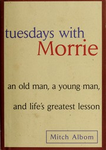

Stoic Smriti
I talk about self-development, personal growth and spirituality. I help you grow into the best version of yourself.
Start here
Books I recommend
Literary fiction
The Kite Runner
Khaled Hosseini · redemption and guilt

Memoir
Tuesdays with Morrie
Mitch Albom · life and mortality
Mythological fiction
The Forest of Enchantments
Chitra Banerjee Divakaruni · identity and perspective
Cozy fiction
Days at the Morisaki Bookshop
Satoshi Yagisawa · healing and self-discovery

Dystopian fiction
1984
George Orwell · power and truth